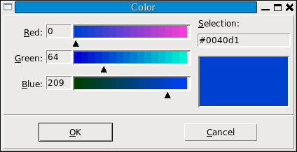

Чтобы предоставить пользователю вашего приложения всплывающее окно, с помощью которого он может выбрать цвет, импортируйте модуль "colorchooser"
from tkinter import colorchooser
и вызовите функцию "askcolor":
result = colorchooser.askcolor(color, option=value, ...)
Аргументами являются:
color
Начальный цвет, который будет отображаться. По умолчанию начальным цветом является светло-серый.
title=text
Указанный
textотображается в области заголовка всплывающего окна. По умолчанию используется заголовок "Color".
parent=W
Заставляет всплывающее окно отображаться поверх окна
W. По умолчанию оно отображается поверх корневого окна.
Если пользователь нажмет кнопку "OK" во всплывающем окне, то возвращаемым значением будет кортеж (triple, color), где triple - кортеж (R, G, B), содержащий значения красного, зеленого и синего в диапазоне [0,255] соответственно, а color - выбранный цвет в формате '#RRGGBB'.
Если пользователь нажмет кнопку отмены "Cancel", эта функция вернет (None, None).
Вот как выглядит всплывающее окно на системе автора:
